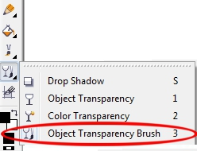
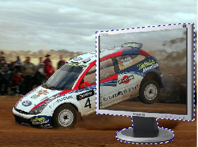

Создание эффекта "выхода за пределы изображения" в Photo-Paint
В этом примере мы будем использовать многие из рассмотренных до этого средств Photo-Paint. В нем вы увидите, как можно их совместно использовать для получения нужного результата, а также преимущества совместного использования Photo-Paint и Corel Draw.
Итак. Постановка задачи… Многие из вас видели в интернете, созданные составные картинки, имитирующие тот или иной эффект. Мы же с вами создадим один из вариантов такого изображения – «выход за пределы монитора». Для этого нам понадобится подходящее исходное изображение и изображение монитора. Кстати, в поисках изображения монитора, я убедился, что найти его оказалось не так уж и просто. После поиска и получения исходных изображений, выяснилось, что они естественно, разных размеров и разрешения, что усложняет несколько задачу, но зато делает более реальным и интересным наш пример.
На рисунках 1 и 2 показаны исходные изображения (нужные исходные файлы находятся в прикрепленных файлах).
Теперь, когда вы увидели исходные изображения, думаю, вы догадались, что мы будем создавать иллюзию автомобиля «выпрыгивающего из монитора».
Шаг 1. Анализ изображений.
После загрузки обеих изображений, (впрочем всегда при создании составного изображения из нескольких) первым делом обращаемся к команде Resample (Изменить разрешение) из меню Image (Изображение). Просмотр данных об обоих изображениях показал следующие результаты. Изображение с автомобилем имело размеры 130х97 мм и разрешение 100 dpi. А изображение монитора имело размеры 353х435 мм и разрешение 72 dpi. Очевидно, что изображение монитора куда больше, чем изображение с машиной.
Кроме этого, скорее всего (а чаще всего так и бывает), нам понадобится копия изображений. Для выполнения следующего шага, нам нужно установить разрешения для обеих изображений одинаковым. Для этого в изображении монитора выполним команду Image > Resample (Изображение > Изменить разрешение). В диалоговом окне Resample (Изменить разрешение), в области Resolution (Разрешение), в счетчиках Horizontal (По горизонтали) и Vertical (По вертикали), установим разрешение 100 dpi. На этом этапе, вы можете сохранить изображение монитора под другим именем, чтобы исходное изображение оставалось без изменения.
Шаг 2. Подготовка к созданию маски автомобиля.
Т. к. мы решили получить изображение автомобиля, «выезжающего из монитора», то как вы догадались, нам потребуется выделить автомобиль для дальнейшей работы. При ближайшем рассмотрении, можно прийти к выводу, что выделить автомобиль с помощью инструментов выделения по цвету или другим способом практически невозможно. Поэтому мы воспользуемся для этих целей инструментом Path (Путь). Но мы немного разнообразим наш пример, тем более, лично мне, выделять таким образом объекты удобнее силами Corel Draw, т. к. в силу своей природы, Corel Draw гораздо лучше, быстрей и точней управляется с кривыми и линиями.
Откройте Corel Draw и создайте пустой документ с разрешением 100 dpi и размером А4, например. Импортируйте изображение в Corel Draw или скопируйте его из Photo-Paint. В Corel Draw создайте еще один слой и обведите автомобиль используя инструмент Freehand или Bezier, по своему усмотрению. Старайтесь использовать для этого тонкий абрис. У вас в конечном итоге должно получиться так, как на рис. 3.
Чтобы лучше было видно на рисунке, я перед созданием скриншота увеличил толщину линии до 2 мм и выделил ее синим цветом, однако на самом деле, линия тонкая и черная. Обратите внимание, что в местах изгиба, количество узлов достаточно велико, это позволяет точно повторить контур автомобиля.
После обвода линией автомобиля, растровое изображение можно удалить, останется только контур (рис. 4).
Сохраните это изображение в родном формате Corel Draw – cdr. На этом «помощь» Corel Draw завершена. Вы можете попробовать обвести автомобиль и в Photo-Paint инструментом Path (Путь). Чтобы вам было понятно, почему я выбрал именно Corel Draw для этой цели, сделайте этот шаг в обеих программах и сравните, где было легче это сделать (хотя это еще зависит от того, насколько вы хороши ими владеете). Лично я, обвел автомобиль в Corel Draw буквально за пару минут.
Итак, откройте изображение автомобиля в Photo-Paint и откройте докер Path (Путь). Если он у вас не открыт, вы можете его вызвать нажав Alt + F10. В меню докера выберите команду Import Path (Импортировать путь). В открывшемся диалоговом окне, в списке форматов файлов, выберите All File Formats (Все форматы файлов) или .CDR и выберите сохраненный нами в Corel Draw файл контура автомобиля. В докере Path (Путь) через пару секунд появится миниатюра пути, а в окне изображения появится импортированный контур (путь) (рис. 5).
Как видно из рисунка, в докере импортированному контуру было автоматически присвоено название Path 2 (Путь 2). Но сам новый путь не совпал с автомобилем, он немного смещен относительно него. Пусть вас это не пугает, мы сейчас исправим эту ситуацию.
Шаг 3. Создание маски.
Перед созданием маски и дальнейшими манипуляциями, сохраните изображение под другим именем или выполните команду Image > Duplicate (Изображение > Дублировать), чтобы у нас всегда был под рукой оригинал. Когда у нас есть готовый путь, нам не составит теперь труда создать маску. Выполните команду Mask > Create > Mask from Path (Маска > Создать > Маска из пути) или щелкните на Панели свойств инструмента Path (Путь) кнопку Mask from Path (Маска из пути). Появится рамка выделения (если у вас отключен режим Mask Overlay (Наложение маски)). Сам путь можно удалить, он нам больше не понадобится. Это можно сделать, например, в докере, нажав внизу кнопку, в виде мусорной корзины.
Нажмите клавишу М, чтобы активизировать инструмент Mask Transform (Преобразование маски) и перетащите рамку выделения, чтобы совместить ее с автомобилем (рис. 6).
Теперь самое время сохранить маску. С практической точки зрения, имеет смысл сохранить маску на диск в том случае, если вы не уверены, что у вас все сразу получится и тогда придется все начинать с нуля, а также, если вы собираетесь прервать работу и продолжить ее в другое время. Если вы уверены в своих силах и имеется в запасе время, тогда можно смело сохранять маску в канал. В нашем примере, мы сохраним маску именно как канал. Для этого откройте докер Channels (Каналы) и нажмите внизу кнопку New Alpha Channel (Создать альфа-канал). В открывшемся диалоговом окне New Alpha Channel (Создать альфа-канал), щелкните ОК, а затем в докере нажмите кнопку Save to Current Channel (Сохранить в текущий канал).
Маска создана и сохранена. Можно также удалить маску в докере Channels (Каналы), нажав кнопку Delete Current Channel (Удалить текущий канал) в виде корзины, т. к. она нам сейчас не нужна, а загрузить ее из альфа-канала, мы сможем в любой момент. Можете свернуть окно изображения, или сохранить его под новым именем, как промежуточный результат. Сохранять следует в формате .cpt, т. к. при сохранении в формате .jpg маска не сохраняется.
Шаг 4. Подготовка изображения монитора.
Т. к. мы на первом шаге изменили разрешение изображения монитора, сейчас нам только остается отделить его от белого фона. Для этого, откройте изображение (если оно было закрыто) и нажмите клавишу W, чтобы вызвать инструмент Magic Wand Mask (Маска волшебной палочкой). На Панели свойств установите значение параметра Tolerance (Допуск), равным 3. Такое малое значение Допуска выбрано потому, что фон белый, а изображение корпуса монитора также очень светлое, поэтому при больших значениях параметра Tolerance (Допуск), выделился бы не только фон, но и часть монитора.
Щелкните инструментом на фоне, а затем на кнопке Inver mask (Инвертировать маску), на Стандартной панели инструментов. Маска готова (рис. 7).
Шаг 5. Вставка изображения монитора в изображение с машиной.
После создания маски, все что вам остается, так это нажать кнопку Copy (Копировать) на Стандартной панели инструментов или скопировать любым понравившимся вам способом. Теперь разверните окно изображения с машиной и вставьте из Буфера обмена монитор. В этот момент вас поджидает неожиданный «сюрприз» (рис. 8).
Как видно из рисунка, монитор оказался гораздо большего размера, чем все изображение с машиной. Может случиться так, что вы будите видеть после вставки только экран монитора, а не большую его часть. Также вас может поставить в затруднение ситуация, если у вас масштаб отображения будет таким, что вы не увидите ограничивающую рамку вставленного монитора. Вам нужно просто уменьшить масштаб и вы увидите рамку и управляющие маркеры, как на рисунке.
Однако, вас не должно смущать такое положение дел. Если вы посмотрите в докер Objects (Объекты), то увидите, что выделенный и скопированный нами монитор, вставился как новый объект.
Теперь вам остается только потянуть мышью за угловой маркер, чтобы сделать размеры монитора более подходящими для дальнейшей работы (рис. 9). Переместите его ближе к правому краю изображения. Пусть вас на этом этапе не сильно беспокоят точные размеры, мы их подгоним по ходу работы.
Шаг 6. Создание прозрачного экрана
Теперь нам нужно создать иллюзию, что часть изображения с машиной, находится на экране монитора. Для этого нам нужно сделать его прозрачным. Для этих целей в Photo-Paint есть инструмент – Object Transparency Brush (Кисть прозрачности объекта).
Этот инструмент находится в группе инструментов Interactive/Transparency Tools (Инструменты интерактивной прозрачности) на панели Toolbox (Набор инструментов) (рис. 10). На панели свойств установите значение параметра Transparency (Прозрачность) равным 67, а в счетчике Feather (Размытие) установите значение 0.

Теперь аккуратно «закрасьте» экран монитора, меняя форму и размеры кисти на Панели свойств. В итоге экран монитора должен стать прозрачным, как на рис. 11.

Шаг 7. Подгонка монитора под изображение с машиной.
Теперь нам нужно расположить монитор таким образом, чтобы он сочетался с машиной. В Photo-Paint это сделать не сложно с помощью инструмента Object Pick (Указатель объектов). Меняя на Панели свойств режимы работы с объектами, выберите оптимальное расположение монитора. Для этого используйте режимы Perspective (Перспектива), Skew (Наклон) и Position and size (Положение и размеры) на Панели свойств. У вас должно получиться примерно, как на рис. 12.
Можно конечно еще поэкспериментировать с расположением, наклоном и перспективой монитора. Здесь все ограничивается лишь вашими вкусами и предпочтениями. Важно, что вы уловили смысл и назначение предпринимаемых действий.
Однако при ближайшем рассмотрении, мы видим, что нас ожидал неприятный сюрприз. Дело в том, что нам нужно разместить монитор на одном уровне с машиной, а у нас ножка монитора находится ниже, что портит все впечатление и делает изображение просто нереальным. Исправить эту ситуацию поднятием монитора выше в изображении с одновременным увеличением его размеров, приведет не к лучшим результатам. Ну что ж. Попробуем справиться и с этой проблемой. Сначала нам потребуется визуальный ориентир для выполнения это работы. В Photo-Paint, как вы помните, это средство называется направляющие. Выполните команду View > Rulers (Вид > Линейки). Разместите горизонтальную направляющую на уровне касания земли переднего колеса машины. Нам нужно, чтобы ножка монитора была на том же уровне. Для этого нам нужно сделать «обрезание» ножки.
Т. к. монитор у нас является объектом, то превратим его в маску, нажав комбинацию клавиш Ctrl + M. Так как испортить остальную часть изображения нам ничего не грозит, нажмите клавишу В, чтобы активизировать инструмент Brush Mask (Маска кисти). На Панели свойств включите режим Subtractive mode (Режим вычитания) и закрасьте монитор, кроме ножки. Теперь у нас осталась выделенной только она. Выполним обратное преобразование – маски в объект. Для этого нажмите комбинацию клавиш Ctrl + Shift + стрелка вверх, чтобы создать объект вырезанием выделения. Вы можете увидеть, что в докере Objects (Объекты) появился еще один объект. Перетащите в окне изображения ножку монитора вверх, как можно выше, чтобы сделать ее максимально короткой. Однако этого недостаточно, монитор по прежнему будет ниже машины. Выделите оба объекта и перетащите их вверх, пока подставка не окажется практически на одном уровне с передним колесом. Ножка монитора сейчас находится на переднем плане, заходя на экран. При выделенной ножке, выберите инструмент Ластик и сотрите лишнюю часть. Т. к. при выделенном объекте (который находится поверх остальных), остальные инструменты воздействуют только на него, то Ластик никак не повредит остальную часть изображения. У вас должно получиться, как на рис. 13.
Шаг 8. Создание из машины объекта.
Пришла пора вспомнить о созданной ранее маске и сохраненной в виде альфа-канала. Выполните команду Mask > Load > Alpha 1 (Маска > Загрузить > Альфа 1). Инвертируйте маску и нажмите комбинацию клавиш Ctrl + Shift + стрелка вверх. Теперь у вас в докере Objects (Объекты) должно быть четыре объекта: фон, ножка монитора, верхняя часть монитора и машина.
Но она по прежнему перекрыта монитором (рис. 14).
Нам необходимо ее установить перед ним. И в этом нам поможет докер Objects (Объекты), в котором сделать это проще всего. В докере Objects (Объекты) просто перетащите «объект-машину» в самый верх списка объектов. Теперь монитор окажется позади машины. Это то, что нам и было нужно (рис. 15).
Однако нужно еще немного подкорректировать взаимное расположение машины и монитора, чтобы было похоже, что машина выезжает из экрана монитора. В докере Objects (Объекты) выделите монитор и ножку и передвиньте их немного влево (рис 16). Здесь вы вольны в своем выборе, как лучше разместить между собой объекты. Это дело вкуса, как вам покажется лучше, так и можете сделать.
Шаг 9. Придание изображению окончательного вида
Можно было бы закончить этот пример на шаге 8. Наша цель была рассмотреть в действии, так сказать, взаимодействие и совместное применение средств Photo-Paint: масок, путей, каналов и объектов. Другими словами, я хотел еще раз показать, что в реальной работе обычно приходится использовать весь арсенал средств для достижения хорошего результата и последовательность шагов при выполнении такого рода задач. Кстати, при замене неба в фотографии, приходится делать аналогичные действия (за некоторым исключением).
Для придания окончательного вида нашему изображению, обрежьте его по границе монитора с помощью инструмента Crop (Обрезка), а затем Ластиком вытрите «излишки» неба.
Окончательный вариант изображения представлен на рис. 17.
Для дальнейшего улучшения фотографии, можно было бы заменить небо другим фоном, удалить дополнительно к этому людей и т. д. и т. п., как на рис. 18. Здесь все ограничивается только вашей фантазией. Мы же наш пример закончим именно этим шагом. В конце работы, объедините все объекты с фоном, нажав комбинацию клавиш Ctrl + Shift + стрелка вниз.